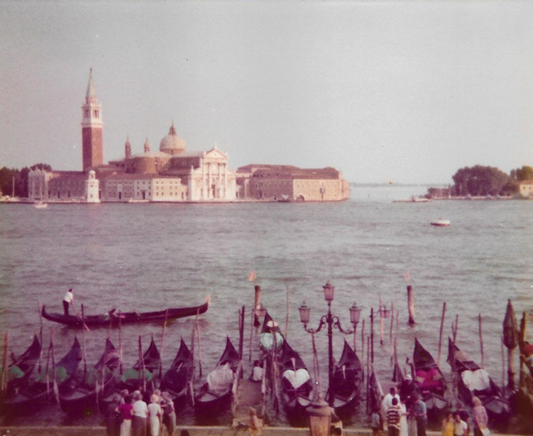
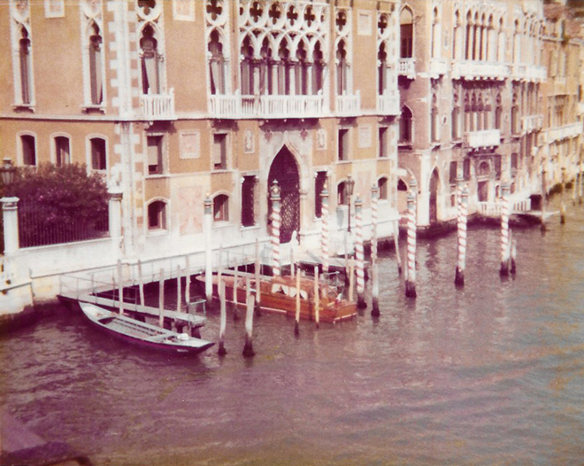
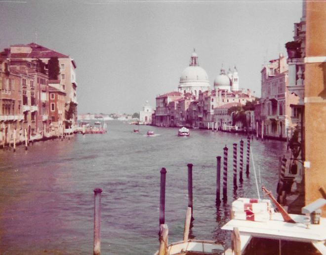
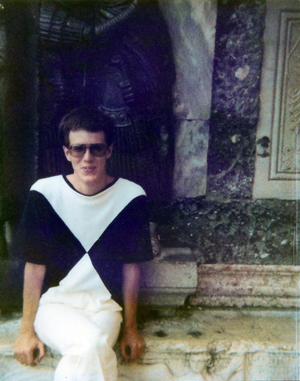
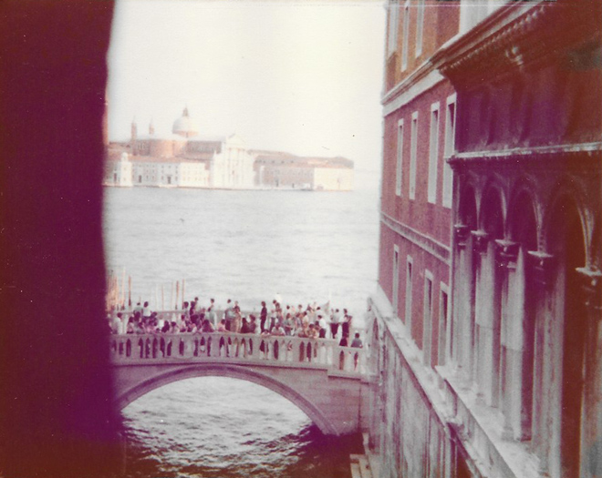

Back in Summer 1979, after my first year at university, a group of us took a mini-bus to Italy - stopping off in Asti, Cuneo, Florence, Venice, Urbino, Piacenza and Pisa. It was dark when we arrived at our campsite in Venice, so it was only the next morning that we discovered we were staying next to a sulphur dioxide plant ...!

The quality of my instamatic camera left a lot to be desired - but it did at least record that I was there.


